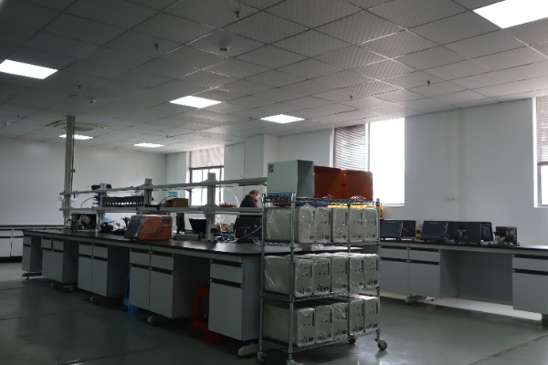

High-Precision Airtightness Testing Technology Analysis
In modern industrial production, high-precision airtightness testing is crucial to ensure product quality, safety, and reliability. This article delves into the core technical principles, main methods, and application scenarios of airtightness testing, and shares the latest research achievements from WAFU Tech in this field.
1. Basic Principles of Airtightness Testing
Airtightness testing is a technique that evaluates the sealing performance of a product by measuring gas leakage. Its basic principle is based on the flow characteristics of gas under a pressure difference. When there is a pressure difference between the inside and outside of the tested workpiece, gas flows from the high-pressure side to the low-pressure side. By detecting this gas flow or pressure change, the leakage rate of the workpiece can be determined.
According to the ideal gas law \( PV = nRT \), under constant temperature conditions, the pressure of a gas is inversely proportional to its volume. This principle provides the theoretical basis for airtightness testing methods such as the pressure decay method and differential pressure method.
1.1 Definition and Classification of Leakage
In airtightness testing, leakage is generally defined as the unintended flow of gas through a sealing boundary. Based on the leakage rate, it can be classified as:
- Micro leakage: leakage rate less than 10⁻⁶ mbar·l/s
- Small leakage: leakage rate between 10⁻⁶ mbar·l/s and 10⁻³ mbar·l/s
- Large leakage: leakage rate greater than 10⁻³ mbar·l/s
Different types of leakage require different detection methods and equipment for effective testing.
1.2 Key Factors Affecting Airtightness Testing Results
The accuracy of airtightness testing results is influenced by multiple factors, mainly including:
- Test pressure: Higher pressure makes leaks more obvious, but excessive pressure may damage the workpiece.
- Test duration: Insufficient test time may cause missed leaks, while too long affects production efficiency.
- Temperature variation: Temperature fluctuations affect gas volume and pressure, causing measurement errors.
- Workpiece material: The elasticity modulus and permeability of materials affect sealing performance.
- Sealing method: The material, size, and installation of seals directly impact test results.
2. Main Airtightness Testing Methods
Currently, commonly used industrial airtightness testing methods mainly include pressure method, flow method, helium mass spectrometry leak detection, and ultrasonic testing. Below is a detailed introduction to these methods:
2.1 Pressure Decay Method
The pressure decay method is one of the most commonly used airtightness testing techniques. Its principle is to fill the tested workpiece with gas at a certain pressure, then close the gas source and observe the change in pressure inside the workpiece over time. If there is a leak, the pressure will gradually decrease.
Advantages of the pressure decay method include simple equipment, easy operation, and low cost, making it suitable for airtightness testing of most industrial products. Its disadvantage is relatively low sensitivity and inability to accurately locate leak points.

WAFU Tech's new generation pressure decay tester adopts high-precision pressure sensors and advanced algorithms, achieving a detection accuracy of up to 10⁻⁵ mbar·l/s, meeting the needs of most industrial applications.
2.2 Differential Pressure Method
The differential pressure method is an improved version of the pressure decay method. It detects leaks by comparing the pressure difference between the tested workpiece and a reference standard. During testing, both the standard and the tested workpiece are filled with gas at the same pressure. Then, after closing the gas source, the pressure difference change between the two is measured using a high-precision differential pressure sensor.
Advantages of the differential pressure method include high sensitivity, strong anti-interference ability, and fast detection speed, making it suitable for high-precision airtightness testing. Its disadvantages are the need for a standard reference and sensitivity to environmental temperature changes.
2.3 Helium Mass Spectrometry Leak Detection Method
The helium mass spectrometry leak detection method is currently the most sensitive airtightness testing technique. It uses helium as a tracer gas and detects helium leakage via a mass spectrometer. Helium’s characteristics of low molecular weight, strong diffusivity, and chemical stability make it ideal as a leak detection gas.
The advantages of helium mass spectrometry leak detection include extremely high sensitivity, reaching 10⁻¹² mbar·l/s, capable of detecting minute leaks. It is widely used in aerospace, semiconductors, nuclear industries, and other fields with stringent airtightness requirements. Its drawbacks are high equipment cost, complex operation, and expensive testing costs.
Table 1: Comparison of Different Airtightness Testing Methods
| Testing Method | Sensitivity | Testing Speed | Equipment Cost | Application Scope |
|---|---|---|---|---|
| Pressure Decay Method | Medium | Moderate | Low | General Industrial Products |
| Differential Pressure Method | High | Fast | Medium | Automotive Parts, Electronic Devices |
| Helium Mass Spectrometry Leak Detection | Extremely High | Slow | High | Aerospace, Precision Instruments |
3. WAFU Tech's High-Precision Airtightness Testing Solutions
As a leading company in the airtightness testing field, WAFU Tech is dedicated to providing customers with high-precision and highly reliable airtightness testing equipment and solutions. Our core products include:
3.1 Intelligent Differential Pressure Airtightness Tester
Utilizing advanced differential pressure detection technology combined with high-precision sensors and intelligent algorithms, it achieves fast and accurate airtightness testing. Main features include:
- Detection accuracy up to 10⁻⁶ mbar·l/s
- 7-inch touchscreen display for simple and intuitive operation
- Supports multiple testing modes and customizable testing programs
- Built-in data storage and USB interface for easy data management
- Optional automatic fixtures for fully automated testing
3.2 Helium Mass Spectrometry Leak Detection System
To meet the airtightness testing needs of high-precision products, we have developed a series of helium mass spectrometry leak detection systems that satisfy strict industry requirements. Main features include:
- Imported mass spectrometer with detection sensitivity up to 10⁻¹² mbar·l/s
- Modular design customizable to client needs
- Efficient helium recycling system to reduce usage costs
- User-friendly interface and comprehensive safety protection mechanisms
- Suitable for semiconductors, new energy batteries, aerospace, and other fields
3.3 Automated Airtightness Testing Production Line
To meet large-scale production demands, we offer customized automated airtightness testing production lines that realize fully automated processes from loading, testing to unloading. Main features include:
- Use of industrial robots and advanced control systems
- High testing efficiency, capable of 10-60 tests per minute
- Automatic judgment and sorting of good and defective products
- Real-time data statistics and analysis, supporting MES system integration
- Customizable design according to client production processes
4. Development Trends of Airtightness Testing Technology
With the development of Industry 4.0 and smart manufacturing, airtightness testing technology is continuously innovating and advancing. The main future development trends include:
4.1 Intelligence and Automation
Airtightness testing equipment will become increasingly intelligent, featuring automatic calibration, automatic diagnosis, automatic parameter adjustment, and seamless integration with other production line equipment to form a complete intelligent testing system.
4.2 High Precision and Miniaturization
With the continuous growth of electronics, medical devices, and other industries, the demand for airtightness testing of small components is increasing. Future testing equipment will trend towards higher precision and smaller size.
4.3 Data Analysis and Predictive Maintenance
Through big data analysis and artificial intelligence technologies, testing data will be deeply mined and analyzed to predict product quality and monitor equipment status, enabling early detection of potential issues and preventive maintenance.
4.4 Green and Energy-Saving
Developing more environmentally friendly and energy-saving testing technologies and equipment to reduce environmental impact, lower energy consumption, and reduce testing costs is an important direction for the future development of airtightness testing technology.